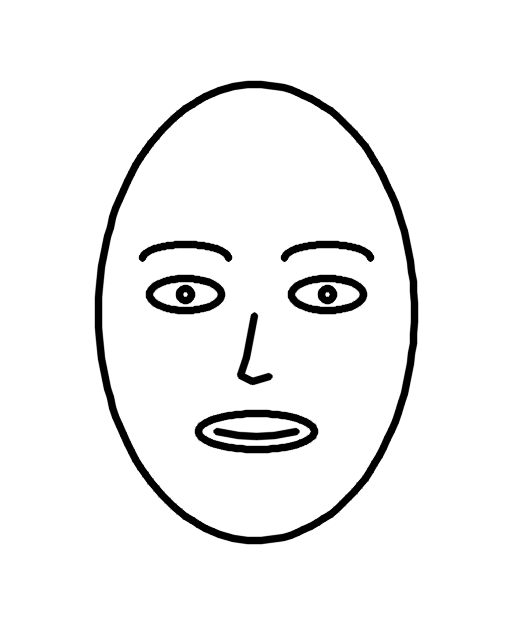
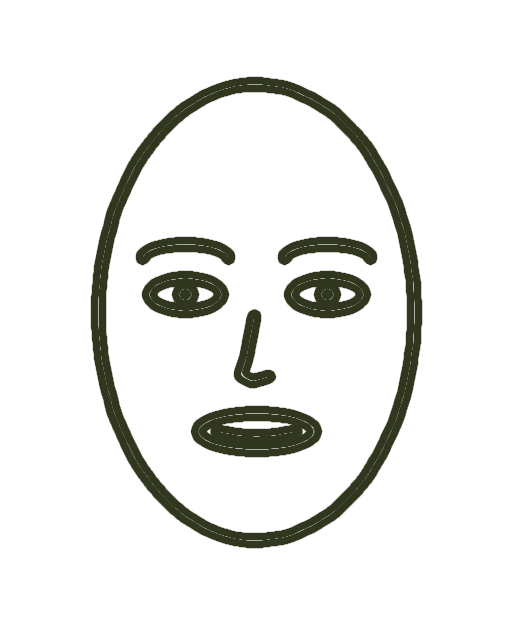
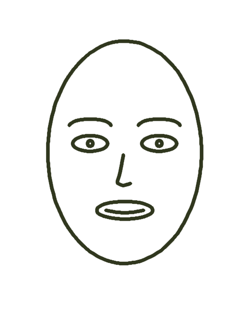

ماذا يحدث إذا بدأنا برسم خطي جاهز؟
مركز الخط اجتاز اختبار المرجع البسيط. تتبّع الحواف ضاعف طول الرسم لأنه يتبع جانبي الحبر.
المرجع رسم هندسي اصطناعي من إعدادنا، وليس بورتريه فنيًا وافق عليه المستخدم. النجاح هنا يختبر هندسة التتبّع فقط، ولا يثبت حفظ هوية وجه أو جودة رسم صورة فوتوغرافية.
مقارنة فعلية للمسارات المعادة



الصورتان الناتجتان أُعيد رسمهما من النقاط التي أعادها مستخرج Python ومعالج JavaScript الفعليان، بسماكة عرض موحدة 5 بكسلات للمقارنة. ليستا نسختين مخفيتين من الصورة الأصلية، وليستا محاكاة فيزيائية لقلم أو ذراع.
القياس
| المسار | الضربات | المكونات / المرجع | تغطية خط المرجع ضمن 2 بكسل | ضمن 4 بكسلات | نسبة طول الحركة إلى المرجع | الحكم الهندسي |
|---|---|---|---|---|---|---|
| حواف الصورة | 16 | 16 / 10 | 0.00٪ | 99.95٪ | 2.124× | لم يجتز |
| مركز الحبر | 10 | 10 / 10 | 99.95٪ | 100.00٪ | 1.079× | اجتاز |
تغطية المرجع هي نسبة بكسلات خط المركز المعروف التي تقع على مسافة لا تتجاوز السماحية من المسارات الناتجة. عند سماحية 2 بكسل، تقع حواف الحبر السميك خارج المركز؛ لذلك فشلها لا يعني أنها اختفت بصريًا. نعرض سماحية 4 بكسلات أيضًا لتوضيح أثر اختيار العتبة. يبقى تضاعف طول الحركة دليلًا مستقلًا على المرور حول جانبي الحبر.
قبول هذا الاختبار التجريبي يتطلب: تغطية المرجع ودقة قرب المسارات منه ≥95٪ ضمن 2 بكسل، وتغطية كل مكوّن ≥90٪، ومطابقة عدد المكونات، ونسبة طول بين 0.85 و1.15. هذه شروط هندسية وضعناها لهذا المرجع؛ ليست معيار جودة فنيًا معتمدًا ولا نسبة تشابه وجه.
هل وصلت الخطوط المهمة؟
| المكوّن المعروف في المرجع | تغطية مركز الخط ضمن 2 بكسل |
|---|---|
| محيط الوجه | 100.00٪ |
| الحاجب الأيسر | 100.00٪ |
| الحاجب الأيمن | 100.00٪ |
| العين اليسرى | 100.00٪ |
| العين اليمنى | 100.00٪ |
| بؤبؤ أيسر | 100.00٪ |
| بؤبؤ أيمن | 100.00٪ |
| الأنف | 98.89٪ |
| حد الشفتين | 100.00٪ |
| فصل الشفتين | 100.00٪ |
الأنف هو الأقل تغطية في هذه التجربة؛ حدود الصورة وترقيم البكسلات والترقيق تؤثر في المطابقة. لا نستنتج من المتوسط وحده أن كل جزء مطابق تمامًا.
كيف عزلنا الاختبار؟
- مصدر ثابت 512×640 بكسل، بخطوط سوداء على خلفية بيضاء وسماكة 5 بكسلات.
- اختبرنا وضعي EdgeDrawing وOtsu + thinning على المصدر نفسه.
- مستوى اختيار 100، دون حذف زمني، ودون حماية أو تهشير أو وصل أو تنعيم.
- اختصار النقاط في Python وJavaScript بقيمة صفر، والحد الأدنى لمسار التتبّع نقطتان.
- اختبرنا الكود الفعلي، لا إعادة تنفيذ تقريبية للاستخراج. قياس المقارنة نفسه كود منفصل.
أعد الاختبار بالأمر python run_reference_benchmark.py من مجلد الأداة. النتائج الرقمية في results.json، وإعدادات الاختبار وبصمة المصدر في provenance.json.
الاستنتاج وحدود القرار
للرسم الخطي الجاهز نستخدم مركز الخط، وللصورة الطبيعية نحتاج أولًا إلى إنتاج رسم خطي مناسب. لا يجوز إرسال صورة قلم جاهزة إلى كاشف حواف ثم اعتبار الحدود المزدوجة ضربات قلم أصلية.
هذا الاختبار لا يغطي التقاطعات، أو التلامس بين الخطوط، أو الضوضاء، أو اختلاف السماكات، أو الخطوط الصغيرة جدًا، أو تحويل صورة فوتوغرافية إلى رسم فني. قبل اعتماد المحوّل تجاريًا أو ميكانيكيًا نحتاج مجموعة مراجع أوسع، ومنها رسم خطي يوافق عليه المستخدم.
SVG الناتج من المسارات المركزية · SVG المرجع الأصلي · نقاط مركز الخط